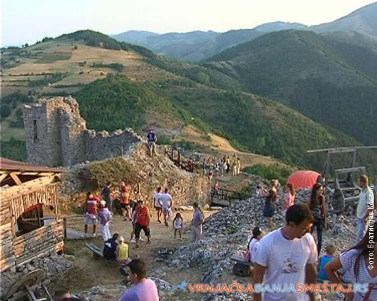
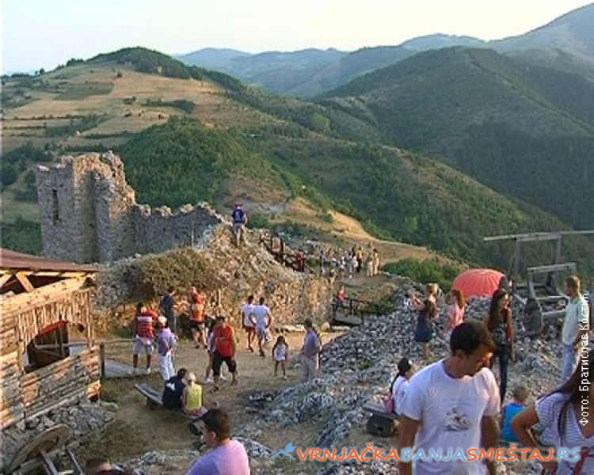
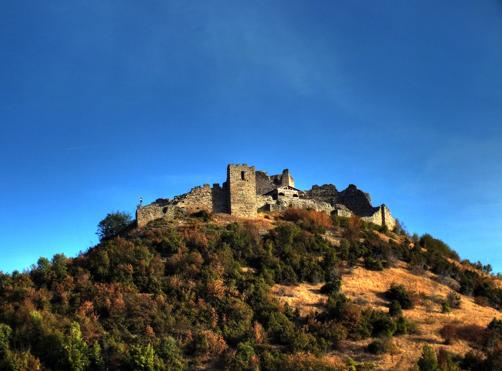
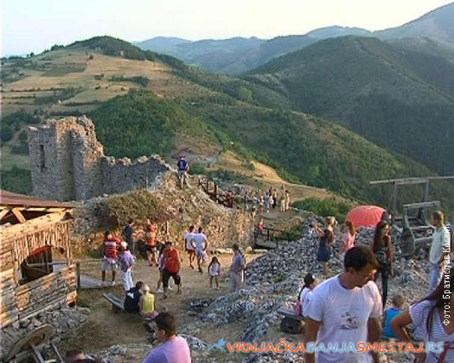

Photos
» Show photos from the top of the steptoe Butte
» Hide photos from the top of steptoe butty
 


Козник је тврђава у Србији, која се налази 8 km западно од Александровца и десетак километара северозападно од Бруса, а подигнута је у последњој трећини XIV века. Смештена је на обронцима Копаоника[a], на једном купастом узвишењу висине 921 m нмв[b], које доминира околином, изнад реке Расине. У историјским подацима се везује за личност великог челника Радича Поступовића, велможе Стефана Лазаревића (кнез 1389—1402, деспот 1402—1427). У склопу Ноћи музеја 2009. године, у тврђави Козник је била смештена поставка под називом „Живот у средњовековном замку“. Данас је делимично конзервирана и налази се под заштитом Републике Србије као споменик културе од великог значаја.
Koznik na jugu Srbije
Srednjovekovni grad Koznik nalazi se na obroncima Kopaonika, naše najveće planine. Smešten na oko 8km zapadno od Aleksandrovca i desetak kilometara severozapadno od Brusa, tvrđava Koznik podignuta je u drugoj polovini XIV veka. Sama tvrđava smatra se jednom od najočuvanijih srednjovekovnih utvrđenja na području Srbije.
Prema legendi, utvrđeni grad zidala je Jerina, žena despota Đurađa Brankovića. Tvrđava Koznik, sa čijih se zidina i kula pruža pogled na planine Kopaonik i Goč, kao i na župske vinograde, izgrađen je kamen po kamen. Zbog svoje nepristupačnosti, stari i mladi, žene i deca, pa čak i koze su materijal dopremali do visokog utvrđenog dela. Baš zbog životinja koje su učestvovale u izgradnji, stari grad nosi naziv – Koznik.
Djuradj Brankovic
Tvrđava Koznik — smeštena na kupastom bregu sa oštrim stenama na tri strane koje onemogućavaju prilaz, na 921 metru nadmorske visine, oko osam kilometara zapadno od Aleksandrovca i desetak kilometara severno od Brusa — rađa upravo takve melanholične misli. Podignuta je verovatno za vreme kneza Lazara Hrebeljanovića, tokom sedamdesetih godina XIV stoleća; zaključak je to koji naučnici izvode iz činjenice da su u Kozniku otkriveni tragovi gradnje u moravskom stilu, ali i činjenice da je upravo "u plemenitom gradu Kozniku" knez Lazar 8. avgusta 1381. godine izdao povelju najvažnijem svetogorskom manastiru Velikoj Lavri. Brus online Grad Koznik
